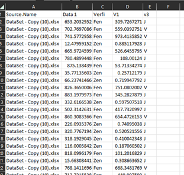

3rd Party files
Note: All sensitive data has been removed from this document to protect privacy. The data within the cells have factitious values. The processing time and logic remain true.
Process:
We receive files from a vendor that is our competitor but due to legal reasons they have to send us the requested data. The data houses information relating to shareholders that we need to upload to our database.
Challenge:
The process is manual, each file is password protected, taking 2 to 5 days to complete due to competing priorities, the value of the data can range from 2,500 to 80,000 rows per a file.
Solution:
Using Excel, VBA and power query this process was streamlined to be completed in 15 minutes. A time savings of 2 to 5 days of manual work.
Old process of completing the task - If you would like to skip ahead to the part that I improved, please click here.
Details of the Old Process:
The file(s) are sent to are sent to us using FTP (File Transfer Protocol) the password is the same for each file, for the sake of this writing it’s Password see image 1 below.

Image 1: Mock FTP folder
Open the file and input the password, for the sake of this reading it’s Password. The file headers are few but important. Column A houses the account #, Column B has exclusions; Columns C & D has verifiers & column E has the company name.

The account number must be 12 digits, so we must reformat the data in column A to show all 12 digits. This is done by highlighting the data in column A, right clicking, go to format cells select custom, then in the “type” text box enter 12 zeros, this will format the highlighted data to this format. In column B sort and remove the term Zen as this data isn’t relevant for our purposes. In column C we need to only include values higher than or equal to 500, anything lower must be excluded. This can be done by using an IF statement. In cell F1 rename the header as “V3 sort”, then in cell F2 insert the following IF formula “=IF(C2>=500,"Include ","Remove")”. Drag this formula all the way down to the last row. Then, in column D, anything that’s listed as “J” needs to be removed from the file, this is done with an additional filter. Lastly, we need to drop the fractional amounts in column C, this can be done using an INT function, in cell G2 place the following function “=INT(C2)” and drag this down to the last row on column C. Once completed, highlight from G2 to the last cell and paste the values in column C. Lastly, we need to copy and paste all the remaining values remaining onto another spreadsheet to upload.

An example of what the file looks like prior to removing columns F & G
This process continues for each file in the FTP folder and once completed we remove column F titled “V3 sort” and column G prior to submitting for upload.
Details of the New Process:
Step1 Setup the files
The first thing that we need to do is create a folder for processing this work. The folder name doesn’t have an impact on the process so name it as you deem fit. Within these main create two additional folders named source file and Staging files. The source files folder is used to maintain the integrity of the original files, while the staging folder is used to process the data. Once completed you should have all your files in both the source files folder and the Staging files folder. Since we process our files in the Staging files folder, we will start the process from there.
The files are sent to us using FTP (File Transfer Protocol) the password is the same for each file, for the sake of this writing it’s Password. The first thing that we need to do is create a folder for processing this work. The folder name doesn’t have an impact on the process so name it as you deem fit. Within this main create two additional folders named source file and Staging files. The source files folder is used to maintain the integrity of the original files, while the staging folder is used to process the data. Once completed you should have all your files in both the source files folder and the Staging files folder. Since we process our files in the Staging files folder, we will start the process from there.
Step 2 Unlocking the excel files
The first thing that we need to do is to unlock all the excel files. Since the password is the same for each file this can best be accomplished by using Visual Basics Applications (Visit the VBA Getting Started page). First open a new excel file on the desktop, click on the Developer tab in the excel Ribbon. If you do not see the developer tab in excel then you would need to activate this setting, please use this guide as a template (how to enable VBA)
We would then click visual basic, insert and then Module. After the process is completed, the screen should look like this.

Enter the following code below into the module.
'Used to remove passwords in a folder. Just need to adjust the code with the updated password. This also places the unlocked files into a new folder named "Password Removed Files".
Sub test()
Dim WB As Workbook
Dim xFd As FileDialog
Dim xFdItem As Variant
Dim xFileName As String
Set xFd = Application.FileDialog(msoFileDialogFolderPicker)
If xFd.Show = -1 Then
xFdItem = xFd.SelectedItems(1) & Application.PathSeparator
xFileName = Dir(xFdItem & "*.xls*")
MkDir xFdItem & "\Password Removed Files"
Do While xFileName <> ""
Set WB = Workbooks.Open((xFdItem & xFileName), Password:="Password")
WB.SaveAs FileName:=xFdItem & "Password Removed Files\" & xFileName, FileFormat:=51, Password:="", WriteResPassword:="", _
ReadOnlyRecommended:=False, CreateBackup:=False
WB.Close True
xFileName = Dir
Loop
End If
End Sub
Then hit the run button. This will open file explorer, select the folder that requires the passwords to be removed. The code will execute and unlock all the excel files in the batch and create a new folder named Password Removed Files which houses all the files that have had their password protection removed.
Step3: Extracting all the data from the excel files
Next, how do we extract the results from the excel files? This is especially important since each of these files can have between 2,500 to 80,000 rows of data per a file. Using Power Query, we can extract the details of all the excel files. This can be achieved by doing the following.
Open a blank excel file, Go to Data on the ribbon tab, Get data, From File then from Folder. File explorer will open, navigate to the folder named Password Removed Files and click ok. The query will load and excel will provide a recommended query based on the data.

Click Combine arrow by combine and select combine and transform data. Select sheet1 and click ok. The following should pop up. Click Close and Load on the upper right side. Save the excel file that loads, this will be used for future 3rd party files provided, I have named it “Query 3rd party 12-20-22”.

Then copy and paste the values from this file into a separate excel file for uploading. It should look like the following image below.
In order to prep this file for upload we can do the process that we previously mentioned but it would be time consuming, instead lets us a VBA macro to complete this process.
After the data has been combined, we need to cleanse our data since a lot of data that is transmitted to us doesn’t get used. A simple sort to identify the outliers and remove them from the list is required. To do this select the sort option in excel, then Restrict the search to Items on column A that start with “C-XXXX”, “B-xxxx” & “Z-XXXX”. Then apply an additional cross filter in column D for values of “Y”.
This file had now been processed and ready for processing, be sure to copy the file to a new excel file for processing with our uploading team.